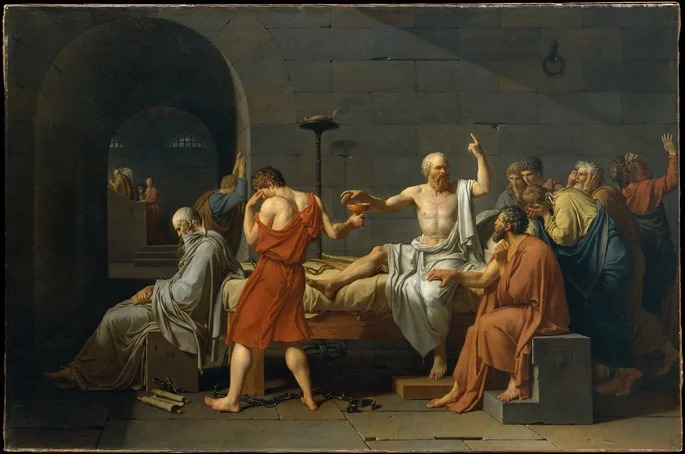
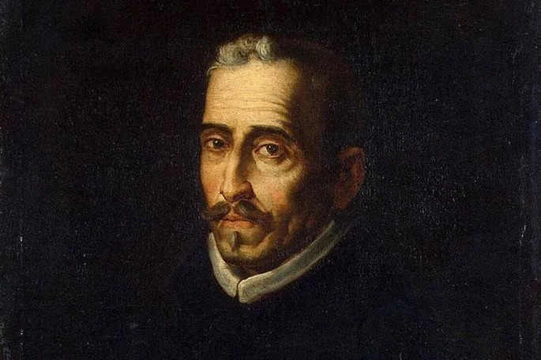
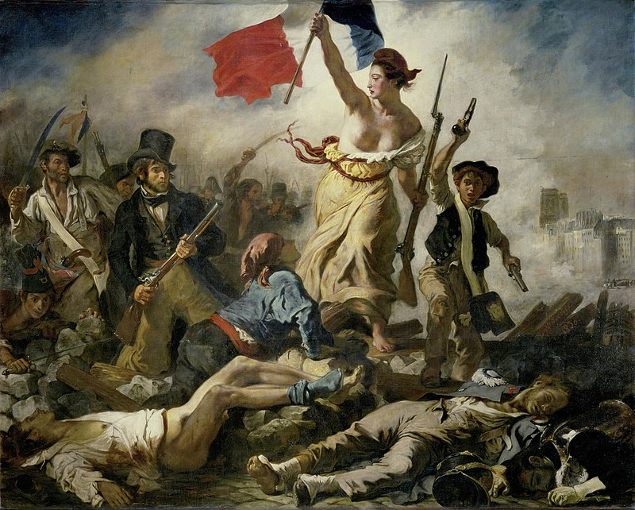
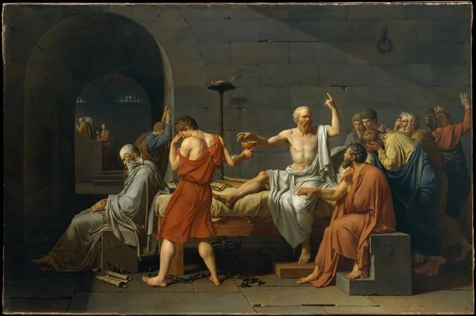
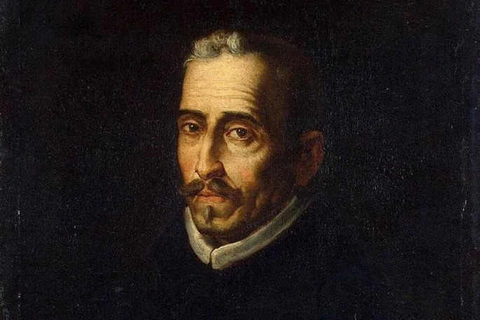
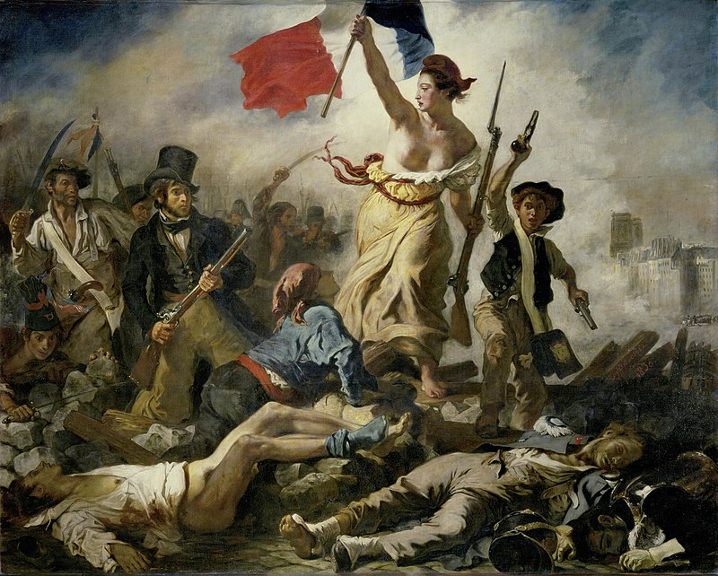

| Siglo V a XV |
Comienza a surgir la literatura "Medieval" Después de la fragmentación del imperio romano, en Europa surgieron las lenguas romances. La teología es el principal rasgo, ya que eran los miembros del clero los que sabían escribir, pero también lo son el amor cortés o los poemas épicos. El Cantar de Mio Cid (Anónimo) o el Libro del buen amor (Arcipreste de Hita) son dos obras literarias de referencia de esta época. |
| Siglo XV a XVI |
El "Renacimiento" comprende del siglo XV al XVI y las obras giraban en torno la naturaleza, el amor y la mitología. Los valores clásicos y el antropocentrismo se consolidaron, dando lugar a obras tan conocidas como Don Quijote de la Mancha, de Miguel de Cervantes, o Macbeth, de William Shakespeare. |
| Siglo XVII |
Empieza la literatura "Barroca". En la España del siglo XVII triunfaron temas como el desengaño, el amor, la mentira y la muerte. Las obras más conocidas de esa época fueron Fuenteovejuna, de Lope de Vega, o La vida es sueño, de Calderón de la Barca. |
| Siglo XVIII |
En este movimiento literario conocido como "Neoclacisismo" se persigue la perfección de los clásicos de Grecia y Roma, mencionados anteriormente. Vuelven a imponerse la belleza y la armonía, dando lugar a obras como El sí de las niñas de Leandro Fernández de Moratín. |
| Siglo XVII a XIX |
Surge el "Romanticismo". Del siglo XVII al XIX, la sensibilidad e imaginación toman relevancia, dando lugar a leyendas, tradiciones y mitos. Los Miserables de Victor Hugo y Frankenstein de Mery Shelley. |
| Siglo XIX hasta la actualidad |
Finalmente llegamos a la historia de la literatura reciente, conocida como "Literatura Contemporánea". Comienza desde el siglo XIX y representa una de las etapas más fructíferas de la literatura. Partiendo de los movimientos anteriores, se ramifica en muchos aspectos, como la literatura romántica, el realismo, el modernismo y el naturalismo.
Más adelante, en el transcurso del siglo XX, aparecen otras corrientes, como la vanguardia, el surrealismo, el realismo mágico, etc.
Sin embargo, gracias a la globalización y la tecnología, se ha vuelto posible el intercambio cultural a una escala sin precedentes en la historia de la literatura, por lo tanto, se realizan más obras literarias. |
Dato curioso: ¿Sabías que, en la actualidad, la literatura se ha vuelto un arte más relevante que nunca? |
Solo en el 2021, se han escrito más de 2.5 millones de libros, de acuerdo al portal de estadísticas Worldometer, y muchos de ellos son obras literarias. Ahora, con internet, cualquier persona puede descargar una plantilla para hacer un guión literario o para desarrollar una novela por su cuenta.
Por eso, podríamos decir que estamos viviendo la mejor etapa de la historia de la literatura, puesto que la digitalización e internet lo han cambiado todo. |
 




